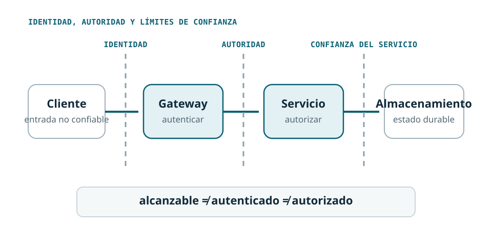

Seguridad, confianza y operación de sistemas distribuidos
Pregunta guía: ¿Qué cambia cuando un participante puede no estar autorizado, estar comprometido, actuar maliciosamente, estar sobrecargado o ser simplemente difícil de diagnosticar?
Antes de leer
Sección titulada «Antes de leer»Una solicitud es lenta y finalmente tiene éxito, pero quien la envió no estaba autorizado. ¿Qué evidencia pertenece al diagnóstico de rendimiento, cuál a seguridad y cuál a ambos?
Se guarda solo en este dispositivo. La verás de nuevo al final del capítulo.Escribe primero una respuesta breve. No necesitas acertar todavía: necesitas una predicción que puedas revisar a medida que el capítulo te dé mejores modelos y evidencia.
Usa lo que ya sabes: El servicio completo construido a lo largo del curso: comunicación, nombres, coordinación, replicación, recuperación y evidencia.
Mapa de carga de trabajo
Sección titulada «Mapa de carga de trabajo»Banco de práctica / reto: Las páginas de práctica guiada y comprobación identifican los casos esenciales exactos. Los casos restantes, las extensiones opcionales y las referencias avanzadas no forman parte de la carga esencial salvo que el profesor los asigne.
SIN CONEXIÓNDescargar lección + práctica + laboratorio para estudio sin conexión (.zip · 74 KB)
Por qué importa este capítulo
Sección titulada «Por qué importa este capítulo»Hasta ahora has construido mecanismos asumiendo principalmente fallos por crash, retrasos, pérdida y particiones. El capítulo final amplía dos fronteras a la vez:
- operación: ¿qué está haciendo realmente el sistema bajo carga y dónde aparece la degradación?;
- confianza: ¿qué cambia si un participante no está autorizado, está comprometido o miente?
Pregunta guía: ¿Qué cambia cuando un participante puede no estar autorizado, comprometido, ser malicioso, estar sobrecargado o ser difícil de diagnosticar?
La respuesta exige evidencia operacional y un modelo de confianza explícito.
Operar el sistema: evidencia antes de explicación
Sección titulada «Operar el sistema: evidencia antes de explicación»Los promedios esconden la cola
Sección titulada «Los promedios esconden la cola»Un promedio de 100 ms puede significar casi todas las solicitudes alrededor de 100 ms o la mayoría a 20 ms y una minoría a varios segundos.
Por eso registra distribuciones: p50, p95, p99 o histogramas.
La experiencia de usuario y los timeouts suelen vivir en la cola, no en el promedio.
Las colas revelan presión
Sección titulada «Las colas revelan presión»Si llega trabajo más rápido de lo que se procesa, crece la queue depth. Antes de que el servicio “caiga” pueden aparecer:
- tail latency creciente;
- timeouts;
- retries;
- memoria en aumento;
- trabajo in-flight acumulado.
Observa colas y capacidad, no solo CPU.
Correlation IDs convierten logs en una explicación distribuida
Sección titulada «Correlation IDs convierten logs en una explicación distribuida»Un request ID o trace/span ID permite unir eventos de varios servicios.
Sin identidad estable puedes tener muchos logs y poca causalidad.
Diagnostica con hipótesis rivales
Sección titulada «Diagnostica con hipótesis rivales»No empieces por una explicación única. Escribe dos o tres hipótesis y pregunta qué observación las distingue.
Ejemplo: p99 alto puede venir de almacenamiento, downstream lento, cola local o retries. Cada causa requiere evidencia diferente.
1. Seguridad empieza por un threat model
Sección titulada «1. Seguridad empieza por un threat model»Un threat model declara:
- assets;
- principals;
- capacidades del atacante;
- componentes confiables;
- fronteras;
- amenazas fuera de alcance.
Sin eso, “secure” no tiene significado verificable.
2. Haz visibles los trust boundaries
Sección titulada «2. Haz visibles los trust boundaries»Dibuja dónde cruzan datos, identidades y autoridad.
Una frontera puede existir entre:
- Internet y API pública;
- servicio y base de datos;
- dos equipos/organizaciones;
- cliente y agente;
- worker y coordinador;
- control plane y data plane.
Cada frontera necesita una regla sobre qué evidencia aceptas del otro lado.
3. Autenticación y autorización son diferentes
Sección titulada «3. Autenticación y autorización son diferentes»Autenticación
Sección titulada «Autenticación»Responde: ¿quién eres?
Autorización
Sección titulada «Autorización»Responde: ¿puedes realizar esta acción sobre este recurso?
Un principal puede autenticarse correctamente y no tener permiso.
Un sistema que verifica identidad pero no autorización solo ha resuelto la mitad del problema.

4. Identidad es más que una dirección
Sección titulada «4. Identidad es más que una dirección»Una IP puede cambiar por restart, NAT, proxy, balanceador o migración.
No uses ubicación como única identidad de seguridad.
La identidad puede provenir de:
- certificado;
- token firmado;
- credencial de servicio;
- clave pública;
- identidad de workload emitida por una autoridad.
El mecanismo concreto depende del trust model.
5. TLS protege el canal, no toda la aplicación
Sección titulada «5. TLS protege el canal, no toda la aplicación»TLS puede aportar:
- confidencialidad en tránsito;
- integridad del canal;
- autenticación del peer según la validación configurada.
No decide automáticamente:
- autorización;
- validez semántica de una operación;
- replay a nivel de aplicación;
- seguridad de secretos en disco;
- corrección de un peer autenticado pero comprometido.
6. Server authentication frente a mutual authentication
Sección titulada «6. Server authentication frente a mutual authentication»En TLS típico el cliente valida al servidor.
Con mTLS ambos lados presentan y validan identidad.
mTLS puede ser útil entre servicios, pero solo si:
- la CA/trust root está bien definida;
- los certificados se rotan;
- la autorización usa la identidad resultante;
- no se acepta cualquier certificado “válido” con privilegios universales.
7. La validación de certificados forma parte del protocolo
Sección titulada «7. La validación de certificados forma parte del protocolo»Debes saber:
- qué nombre/identidad esperas;
- qué autoridad firmas aceptas;
- qué expiración/revocación aplica;
- qué ocurre cuando falla la validación.
Desactivar verificación para “hacer funcionar” TLS destruye la propiedad que intentabas añadir.
8. Cifrado en tránsito no implica cifrado en reposo
Sección titulada «8. Cifrado en tránsito no implica cifrado en reposo»Un dato puede estar cifrado mientras viaja y quedar en texto claro en:
- disco;
- backup;
- swap;
- log;
- trace;
- crash dump.
La protección del canal y la protección del almacenamiento son fronteras diferentes.
9. Integridad y autenticidad no impiden replay automáticamente
Sección titulada «9. Integridad y autenticidad no impiden replay automáticamente»Una solicitud auténtica puede capturarse y enviarse otra vez.
Si el mensaje sigue siendo válido criptográficamente, el servidor necesita semántica adicional:
- nonce;
- secuencia;
- timestamp con ventana;
- request ID;
- deduplicación durable;
- token de uso único.
10. Seguridad e idempotencia se intersectan
Sección titulada «10. Seguridad e idempotencia se intersectan»El request ID del Capítulo 4 ayuda tanto con confiabilidad como con replay.
Pero no son exactamente el mismo problema:
- confiabilidad quiere reconocer retries legítimos;
- seguridad también debe considerar quién está autorizado a repetir y durante cuánto tiempo.
Diseña una única frontera de identidad/efecto que sirva a ambos cuando sea posible.
11. Autorización debe seguir mínimo privilegio
Sección titulada «11. Autorización debe seguir mínimo privilegio»Un worker que necesita leer dos objetos y escribir un resultado no debería recibir acceso administrativo global.
Least privilege reduce el blast radius si la identidad o proceso se compromete.
Pregunta:
- qué acciones necesita realmente;
- sobre qué recursos;
- durante cuánto tiempo;
- desde qué contexto.
12. Pensar en capabilities ayuda con herramientas autónomas
Sección titulada «12. Pensar en capabilities ayuda con herramientas autónomas»Una capability es autoridad concreta para realizar una operación.
Para agentes o workers autónomos, evita “puede usar todas las herramientas”. Prefiere permisos acotados por recurso/acción.
El prompt no es una frontera de seguridad. La autorización debe aplicarse en el servicio o herramienta que ejecuta el efecto.
13. Un nodo comprometido cambia el modelo de fallos
Sección titulada «13. Un nodo comprometido cambia el modelo de fallos»Hasta ahora un nodo podía:
- crash;
- callar;
- retrasarse;
- recuperarse.
Un nodo bizantino puede:
- mentir;
- fabricar estado;
- enviar mensajes incompatibles;
- colaborar con el atacante;
- afirmar que persistió algo sin hacerlo.
Las pruebas de corrección basadas en “los nodos correctos siguen el protocolo” deben revisarse.
14. Equivocación
Sección titulada «14. Equivocación»Ejemplo:
- réplica X dice a A que value=red;
- la misma réplica X dice a B que value=blue para la misma posición.
Un crash no produce dos historias incompatibles intencionalmente. La equivocación es característica de un modelo Byzantine.
15. Consenso crash-fault y Byzantine no son intercambiables
Sección titulada «15. Consenso crash-fault y Byzantine no son intercambiables»Raft está diseñado para participantes que pueden fallar por crash/partición, pero que no fabrican arbitrariamente mensajes válidos en nombre propio.
Un líder malicioso puede violar supuestos fundamentales.
Añadir TLS o firmas puede demostrar quién envió el mensaje; no hace verdadero su contenido ni repara el protocolo de acuerdo.
16. BFT necesita redundancia más fuerte
Sección titulada «16. BFT necesita redundancia más fuerte»En el modelo clásico con hasta f fallos bizantinos suele aparecer la relación:
n >= 3f + 1
Por ejemplo:
- f=1 → n>=4;
- f=2 → n>=7.
La razón está en formar quórums que todavía tengan suficiente intersección de participantes correctos pese a mentirosos.
17. PBFT como referencia histórica
Sección titulada «17. PBFT como referencia histórica»PBFT mostró que protocolos prácticos pueden alcanzar acuerdo bajo fallos bizantinos en configuraciones permissioned.
No necesitas implementarlo aquí. Úsalo para comparar:
- modelo de fallos;
- quórums;
- autenticación;
- coste de mensajes;
- assumptions de membership.
18. Byzantine agreement sigue siendo un problema distribuido
Sección titulada «18. Byzantine agreement sigue siendo un problema distribuido»No es “solo criptografía”. Sigue involucrando:
- orden;
- quórums;
- liveness;
- particiones;
- membership;
- recuperación;
- límites de sincronía.
La criptografía puede autenticar evidencia; no reemplaza el protocolo.
19. Sybil attacks revelan un supuesto de identidad
Sección titulada «19. Sybil attacks revelan un supuesto de identidad»Si un atacante puede crear miles de identidades, contar “un voto por nodo” pierde significado.
Un sistema permissioned controla membership. Un sistema permissionless necesita otro mecanismo para asignar peso o coste a identidades.
20. Ledgers distribuidos son un caso de estudio
Sección titulada «20. Ledgers distribuidos son un caso de estudio»Blockchain/ledgers combinan:
- replication;
- agreement;
- membership/weight;
- historial append-only;
- incentivos o governance.
No son la definición de sistema distribuido ni una solución por defecto.
21. Proof of work y proof of stake resuelven membership/weight de formas diferentes
Sección titulada «21. Proof of work y proof of stake resuelven membership/weight de formas diferentes»Ambos intentan impedir que crear identidades gratis equivalga a controlar consenso, pero usan recursos/supuestos distintos.
No necesitas implementarlos. Identifica qué problema adicional resuelven comparado con un clúster permissioned conocido.
22. Permissioned y permissionless cambian el problema
Sección titulada «22. Permissioned y permissionless cambian el problema»Si conoces de antemano a los participantes y puedes emitir credenciales, el problema de identidad es distinto de una red abierta.
No mezcles requisitos de ambos mundos.
23. Fallos de seguridad pueden parecer fallos distribuidos normales
Sección titulada «23. Fallos de seguridad pueden parecer fallos distribuidos normales»Un atacante puede provocar:
- timeouts;
- overload;
- mensajes malformados;
- credenciales inválidas;
- state divergence;
- replay.
Por eso observabilidad y seguridad se necesitan mutuamente.
24. Logging y tracing son sensibles
Sección titulada «24. Logging y tracing son sensibles»La evidencia operacional puede contener:
- IDs;
- rutas;
- nombres de usuarios;
- payloads;
- headers;
- tokens.
No registres secretos para “tener más observabilidad”.
25. Audit log y debug log tienen objetivos distintos
Sección titulada «25. Audit log y debug log tienen objetivos distintos»Un audit log debe registrar eventos de seguridad relevantes con propiedades más fuertes:
- principal;
- acción;
- recurso;
- resultado;
- request ID;
- timestamp/contexto;
- integridad/retención según el requisito.
Un debug log puede ser más efímero y detallado, pero no debería contener secretos innecesarios.
26. Los secretos también son estado distribuido
Sección titulada «26. Los secretos también son estado distribuido»Tokens, private keys y certificados:
- se crean;
- distribuyen;
- rotan;
- revocan;
- almacenan;
- expiran.
Su ciclo de vida es otro problema de estado distribuido.
27. Workers comprometidos importan en sistemas de tareas
Sección titulada «27. Workers comprometidos importan en sistemas de tareas»Un worker legítimo puede devolver un resultado falso, filtrar datos o afirmar que ejecutó algo.
Si el sistema necesita tolerar eso, quizá requiera verificación independiente, ejecución redundante o un modelo de confianza distinto.
28. Sandboxing y Byzantine correctness son diferentes
Sección titulada «28. Sandboxing y Byzantine correctness son diferentes»Sandboxing limita lo que un proceso puede hacer localmente.
BFT intenta mantener propiedades globales aunque algunos participantes se comporten arbitrariamente.
Son capas complementarias, no equivalentes.
29. Cloud moderno combina muchos dominios de confianza
Sección titulada «29. Cloud moderno combina muchos dominios de confianza»Un servicio puede depender de:
- cloud provider;
- identity provider;
- CI/CD;
- storage;
- third-party APIs;
- agentes;
- operadores.
No basta escribir “internal network = trusted”. Dibuja dependencias reales.
30. “Zero trust” importa menos que verificar explícitamente
Sección titulada «30. “Zero trust” importa menos que verificar explícitamente»El slogan es menos útil que preguntas concretas:
- ¿qué identidad se verifica?;
- ¿quién la emite?;
- ¿qué autorización se aplica?;
- ¿qué se registra?;
- ¿qué ocurre si la verificación falla?
31. Sistemas agentic hacen visible la delegación
Sección titulada «31. Sistemas agentic hacen visible la delegación»Usuario → agente → herramienta/servicio.
El servicio debe decidir autoridad según identidades y políticas reales, no confiar en que el prompt del agente diga “solo haz cosas seguras”.
32. Agente-a-agente conserva los problemas clásicos
Sección titulada «32. Agente-a-agente conserva los problemas clásicos»Aun con agentes aparecen:
- discovery;
- retries;
- duplicate effects;
- timeouts;
- authentication;
- authorization;
- durable state;
- observability.
La capa de IA no elimina sistemas distribuidos.
33. Descripciones de herramientas no son política
Sección titulada «33. Descripciones de herramientas no son política»Un schema de tool describe cómo invocar una acción. No establece quién debe poder invocarla.
La autorización vive en la frontera que ejecuta el efecto.
34. Prompt injection es un problema de confianza de aplicación
Sección titulada «34. Prompt injection es un problema de confianza de aplicación»Un input no confiable puede intentar cambiar el comportamiento del agente y hacerlo usar una capability válida de forma indebida.
La defensa incluye reducir autoridad, validar inputs/outputs y exigir confirmación/política en operaciones de alto impacto.
35. Valida en cada frontera externa
Sección titulada «35. Valida en cada frontera externa»Aunque el canal esté autenticado, verifica:
- tipos;
- rangos;
- ownership;
- transición de estado;
- versión;
- permisos.
Un peer autenticado puede estar bugueado o comprometido.
36. Resource exhaustion es disponibilidad y seguridad
Sección titulada «36. Resource exhaustion es disponibilidad y seguridad»Una entrada válida pero costosa puede saturar CPU, memoria, threads o storage.
Usa:
- límites;
- cuotas;
- admission control;
- backpressure;
- timeouts;
- aislamiento.
El capítulo vuelve así a la operación del sistema.
37. BFT tiene coste
Sección titulada «37. BFT tiene coste»Más réplicas, más mensajes, más validación y más complejidad.
No elijas un failure model más fuerte sin requisito. La seguridad también necesita economía de mecanismos.
38. No todo componente comprometido exige Byzantine consensus
Sección titulada «38. No todo componente comprometido exige Byzantine consensus»A veces basta con:
- aislar el componente;
- verificar outputs;
- usar firmas;
- limitar capabilities;
- replicar un cálculo crítico;
- introducir aprobación humana.
BFT es apropiado cuando la propiedad global realmente debe sobrevivir participantes arbitrarios.
39. Trust model del proyecto final
Sección titulada «39. Trust model del proyecto final»Escribe:
- principals;
- assets;
- trust boundaries;
- identity mechanism;
- authorization rules;
- replay/idempotency;
- secret handling;
- failure model;
- adversarios fuera de alcance.
Una garantía sin estos supuestos está incompleta.
40. Ejemplo — Autenticado pero no autorizado
Sección titulada «40. Ejemplo — Autenticado pero no autorizado»Principal Alice presenta credencial válida pero intenta DELETE sobre recurso de Bob.
Resultado correcto:
- authentication = success;
- authorization = denied;
- estado sin cambios;
- audit event con principal/action/resource/outcome.
41. Ejemplo — Transferencia reejecutada
Sección titulada «41. Ejemplo — Transferencia reejecutada»R7 es una transferencia válida. Un atacante o retry la reenvía.
Si el servidor conserva dedup durable para R7, puede devolver el resultado previo sin repetir efecto.
Si no, la autenticidad del mensaje no impide la duplicación.
42. Ejemplo — Réplica maliciosa equivoca
Sección titulada «42. Ejemplo — Réplica maliciosa equivoca»X envía dos valores incompatibles para la misma posición a peers diferentes.
Un protocolo crash-fault que confiaba en que X seguía sus reglas ya no tiene el mismo argumento de safety.
La identidad criptográfica de X solo prueba que X fue quien mintió.
43. Ejemplo — Timeout de herramienta de agente
Sección titulada «43. Ejemplo — Timeout de herramienta de agente»El agente llama una herramienta stateful y recibe timeout.
La misma incertidumbre del Capítulo 4 aparece. El agente necesita request ID/idempotencia y no debe repetir ciegamente una operación de alto impacto.
Profundización — Operación, confianza y comportamiento adversarial
Sección titulada «Profundización — Operación, confianza y comportamiento adversarial»Las secciones anteriores presentan los mecanismos. Para operarlos bien hay que volver a la misma disciplina usada durante todo el libro: separar señal, hipótesis y decisión.
La observabilidad empieza por una pregunta operacional
Sección titulada «La observabilidad empieza por una pregunta operacional»Una métrica solo es útil cuando responde una pregunta.
Supón un servicio con latencia:
promedio = 40 ms
p50 = 18 ms
p95 = 120 ms
p99 = 900 msEl promedio parece saludable, pero uno de cada cien usuarios puede esperar cerca de un segundo. Si esa cola larga coincide con reintentos, expiración de plazos o retención de locks, la cola de latencia se convierte también en un problema de fiabilidad.
Una investigación razonable conecta:
síntoma del cliente
↓
request_id / trace_id
↓
servicio y dependencia lenta
↓
queue depth / saturación
↓
evento de fallo o cambio de configuraciónNo empieces por «la CPU está alta» si todavía no sabes si las solicitudes lentas pasaron por ese nodo.
Señales doradas y límites
Sección titulada «Señales doradas y límites»Para un servicio pequeño conviene observar, como mínimo:
- tasa de solicitudes;
- tasa de errores;
- latencia por percentiles;
- trabajo en vuelo o profundidad de cola;
- reintentos;
- rechazos por control de admisión;
- estado de dependencias;
- uso de recursos relevante.
Cada señal necesita contexto. Un 90 % de CPU puede ser normal si el servicio mantiene su objetivo de latencia. Un 20 % puede ocultar bloqueo por I/O o una dependencia remota.
La observabilidad no sustituye el modelo del sistema. Aporta evidencia para contrastarlo.
El control de presión protege la capacidad disponible
Sección titulada «El control de presión protege la capacidad disponible»Si llegan solicitudes más rápido de lo que pueden completarse:
llegadas > servicio
↓
crece la cola
↓
crece la latencia
↓
expiran plazos
↓
aparecen reintentos
↓
crece todavía más el trabajoUn sistema puede responder limitando concurrencia, rechazando temprano, degradando trabajo opcional o propagando señales de presión.
Aceptar trabajo ilimitado no es «mayor disponibilidad» si ese trabajo ya no puede terminar dentro del contrato útil.
El threat model debe nombrar activos, actores y capacidades
Sección titulada «El threat model debe nombrar activos, actores y capacidades»Una frase como «proteger el sistema de atacantes» no basta.
Un modelo mínimo puede declarar:
activos:
datos de usuario
credenciales
decisiones de administración
disponibilidad del servicio
actores:
cliente legítimo
operador
servicio interno
cliente malicioso
nodo comprometido
capacidades adversarias:
enviar solicitudes arbitrarias
repetir mensajes válidos
observar tráfico no cifrado
comprometer un worker
robar una credencial concretaDespués pregunta qué queda fuera del modelo. Si no se asume compromiso del kernel del host, no presentes el diseño como resistente a ese atacante.
Los límites de confianza deben corresponder a comprobaciones
Sección titulada «Los límites de confianza deben corresponder a comprobaciones»Un diagrama útil no se limita a flechas de red:
cliente no confiable
|
| autenticar
v
gateway
|
| autorizar operación
v
servicio
|
| credencial de servicio
v
almacenamientoCada cruce debe responder:
- ¿quién presenta identidad?
- ¿quién la valida?
- ¿qué autoridad concede?
- ¿cuánto dura?
- ¿cómo se revoca?
- ¿qué se registra?
«Está dentro de la red» no responde ninguna de estas preguntas.
TLS autentica un canal bajo una política concreta
Sección titulada «TLS autentica un canal bajo una política concreta»TLS puede proporcionar confidencialidad e integridad del canal y, según la configuración, autenticación del servidor o de ambas partes.
Pero no decide:
- si el usuario puede borrar un objeto;
- si un servicio puede transferir dinero;
- si una solicitud repetida debe ejecutarse otra vez;
- si el contenido recibido es semánticamente válido;
- si el endpoint autorizado está comprometido.
Además, la verificación de certificado forma parte del protocolo de confianza. Desactivar validación para «hacer que funcione» elimina precisamente la propiedad que se pretendía obtener.
La autenticación mutua no elimina la autorización
Sección titulada «La autenticación mutua no elimina la autorización»Con mTLS, A puede saber que habla con el servicio B y B que habla con A.
Todavía debe existir una regla:
identidad A
↓
¿puede realizar operación X sobre recurso Y?La autorización debería aplicar mínimo privilegio. Un worker que solo necesita leer una cola no debería recibir una credencial capaz de administrar todas las colas y secretos del sistema.
Replay conserva autenticidad y puede seguir siendo dañino
Sección titulada «Replay conserva autenticidad y puede seguir siendo dañino»Supón un mensaje correctamente firmado:
Transfer(request_id=R9, amount=100)Un atacante no necesita modificarlo para causarnos problemas: puede volver a presentarlo.
La firma continúa siendo válida porque el mensaje sigue siendo auténtico.
El protocolo necesita frescura o identidad lógica, por ejemplo:
- nonce;
- secuencia;
- timestamp dentro de una ventana justificada;
- ID de solicitud durable con deduplicación;
- token de un solo uso.
La solución depende de la operación y del estado disponible.
Seguridad e idempotencia se encuentran en los efectos
Sección titulada «Seguridad e idempotencia se encuentran en los efectos»Si una operación autenticada tiene efectos y el cliente puede reintentar, la protección frente a replay y la supresión de duplicados pueden compartir parte de la maquinaria.
Pero no son conceptos idénticos.
La deduplicación pregunta:
¿Es la misma operación lógica que ya ejecuté?
La protección frente a replay pregunta además:
¿Está autorizado este emisor a reutilizar este mensaje en este contexto y momento?
Un protocolo seguro debe responder ambas preguntas cuando corresponda.
Un nodo comprometido invalida el modelo crash-only
Sección titulada «Un nodo comprometido invalida el modelo crash-only»Raft tolera determinados fallos de crash. Presupone que los nodos correctos siguen el protocolo.
Un nodo bizantino puede:
- mentir sobre su estado;
- enviar mensajes distintos a peers distintos;
- fabricar respuestas;
- retener selectivamente mensajes;
- colaborar con otros nodos comprometidos.
Que un clúster sobreviva a matar un proceso no demuestra tolerancia a esta clase de comportamiento.
Equivocación crea historias incompatibles
Sección titulada «Equivocación crea historias incompatibles»Ejemplo:
nodo X → A: "valor=7, epoch=12"
nodo X → B: "valor=9, epoch=12"X presenta dos afirmaciones incompatibles como si pertenecieran al mismo contexto.
Las firmas pueden ayudar a atribuir la equivocación a X, pero no consiguen por sí solas que A y B acuerden qué valor debe aceptarse.
Autenticidad de mensajes y acuerdo bizantino son propiedades diferentes.
La regla 3f+1 expresa un supuesto de adversario
Sección titulada «La regla 3f+1 expresa un supuesto de adversario»En muchos protocolos BFT clásicos, tolerar hasta f réplicas bizantinas requiere al menos:
n >= 3f + 1Para f=1, cuatro réplicas. Para f=2, siete.
No memorices solo la fórmula. La razón importante es que los quórums deben seguir intersectándose en suficientes participantes correctos pese a respuestas contradictorias.
Cambiar el modelo de fallo cambia los requisitos de redundancia.
PBFT es una referencia, no una receta universal
Sección titulada «PBFT es una referencia, no una receta universal»PBFT mostró que era posible lograr replicación práctica de máquinas de estado bajo fallos bizantinos en sistemas con membresía conocida y ciertos supuestos.
No significa que cada servicio interno deba usar PBFT.
Si la amenaza real es que un worker pueda procesar entrada hostil, quizá la defensa adecuada sea autenticación, aislamiento, validación, límites de recursos y reconstrucción del worker, no consenso bizantino para cada RPC.
El mecanismo debe seguir el threat model.
Sybil es un problema de quién cuenta como participante
Sección titulada «Sybil es un problema de quién cuenta como participante»Si crear identidades es gratuito, un adversario puede presentar cientos de identidades y convertir una regla «mayoría de nodos» en algo sin significado.
Los sistemas permissioned resuelven la pertenencia mediante identidad y administración explícitas.
Los permissionless necesitan otro mecanismo para asignar peso o coste, por ejemplo proof of work o stake. Estos mecanismos abordan membresía/peso; no sustituyen el resto del protocolo distribuido.
Los audit logs tienen un contrato diferente a los logs de depuración
Sección titulada «Los audit logs tienen un contrato diferente a los logs de depuración»Un log de depuración puede ser efímero, verboso y contener datos que jamás deberían aparecer en un registro de auditoría.
Un audit log suele necesitar:
- identidad del actor;
- operación;
- recurso;
- decisión de autorización;
- resultado;
- tiempo/contexto suficiente;
- protección contra modificación no autorizada;
- retención definida.
Y debe evitar secretos, tokens, contraseñas y datos sensibles innecesarios.
«Loguear todo» no es una estrategia de seguridad.
Los secretos tienen ciclo de vida distribuido
Sección titulada «Los secretos tienen ciclo de vida distribuido»Una credencial puede existir en:
- configuración;
- memoria de procesos;
- variables de entorno;
- gestores de secretos;
- cachés;
- copias de seguridad;
- logs por error.
Rotar un secreto exige coordinar productores y consumidores durante una transición. Revocarlo exige saber qué componentes todavía pueden usarlo.
Por eso secretos y credenciales también son estado distribuido con versiones y ciclos de vida.
Los agentes autónomos convierten delegación en arquitectura
Sección titulada «Los agentes autónomos convierten delegación en arquitectura»Un agente que puede usar herramientas actúa mediante credenciales y APIs normales.
La pregunta de seguridad no es «¿es inteligente el agente?», sino:
¿qué identidad usa?
¿qué operaciones puede invocar?
¿sobre qué recursos?
¿qué argumentos se validan?
¿qué acciones requieren aprobación adicional?
¿cómo se deduplican acciones con efectos?
¿qué evidencia queda?Una descripción textual de herramienta no es una política de autorización.
Prompt injection cruza un límite de confianza de aplicación
Sección titulada «Prompt injection cruza un límite de confianza de aplicación»Si contenido no confiable puede influir en una decisión que termina invocando una herramienta privilegiada, el sistema debe separar:
datos no confiables
de
instrucciones/autorización del sistemaLas defensas siguen siendo principios conocidos: mínimo privilegio, validación en el límite, separación de autoridad, confirmación para acciones de alto impacto, límites y auditoría.
Validar en cada frontera reduce confianza implícita
Sección titulada «Validar en cada frontera reduce confianza implícita»No asumas que una solicitud es segura porque «ya la validó el gateway».
Un servicio debe validar los invariantes que necesita para su propia corrección, especialmente cuando recibe datos de colas, servicios internos, cachés o agentes.
La confianza transitiva ilimitada convierte el compromiso de un componente en compromiso de todos.
Agotamiento de recursos es una intersección entre rendimiento y seguridad
Sección titulada «Agotamiento de recursos es una intersección entre rendimiento y seguridad»Un cliente puede ser perfectamente autenticado y aun así generar:
- fan-out enorme;
- consultas costosas;
- miles de conexiones;
- cargas útiles gigantes;
- reintentos agresivos;
- almacenamiento sin límite.
Cuotas, límites, control de admisión y backpressure son mecanismos de fiabilidad y seguridad.
44. Perspectiva histórica
Sección titulada «44. Perspectiva histórica»Los modelos de seguridad se volvieron más fuertes a medida que los sistemas cruzaron organizaciones, Internet, cloud y cadenas de suministro de software.
El curso termina donde empezó: declarando supuestos y reuniendo evidencia suficiente para sostener una afirmación.
45. Errores comunes
Sección titulada «45. Errores comunes»- “TLS = seguro”;
- IP como identidad;
- autenticar sin autorizar;
- registrar secretos para debug;
- tratar Raft como Byzantine tolerant;
- añadir firmas y afirmar consenso BFT;
- usar blockchain porque existen varios nodos;
- confiar automáticamente en servicios internos;
- dar a un agente autoridad amplia porque el prompt lo prohíbe “abusar”;
- confundir convergencia con integridad;
- diagnosticar solo por promedio.
Conexiones de sistemas
Sección titulada «Conexiones de sistemas»TLS, endpoints, DoS, particiones.
Permisos, aislamiento, almacenamiento de secretos y sandboxing.
Aislamiento de hardware, domains de confianza y coste criptográfico.
Agreement, replication, replay y failure models.
Identidad, autorización, secretos y auditoría.
Tail latency, colas, resource exhaustion y backpressure.
Delegación de authority, tool use y prompt injection son problemas de trust boundary sobre sistemas distribuidos normales.
Cierre del libro
Sección titulada «Cierre del libro»Ahora puedes describir un sistema distribuido desde sus señales físicas y procesos locales hasta comunicación, causalidad, coordinación, nombres, replicación, recuperación, transacciones, operación y confianza. La habilidad central es la misma en todos los capítulos: hacer explícito el supuesto, predecir, observar evidencia y limitar la afirmación a lo que esa evidencia realmente demuestra.
Al principio predijiste:
¿Qué explicarías ahora de otra manera y qué evidencia del capítulo te hizo cambiar de opinión?